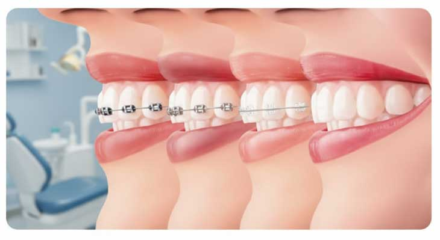

بهترین سن برای ارتودنسی چه زمانی است؟

ارتودنسی یکی از موثرترین روشها برای اصلاح نامرتبی دندانها، مشکلات فک و بهبود زیبایی لبخند است. اما یکی از سوالات رایج این است که بهترین سن برای شروع ارتودنسی چه زمانی است.
بهترین زمان شروع ارتودنسی
به طور معمول اولین بررسی ارتودنسی بهتر است حدود سن 7 سالگی انجام شود. در این سن دندانپزشک میتواند مشکلات مربوط به رشد فک و دندانها را بررسی کند و در صورت نیاز زمان مناسب درمان را مشخص کند.
ارتودنسی در کودکان
در کودکان، بعضی مشکلات فکی و دندانی اگر زود تشخیص داده شوند، راحتتر قابل کنترل هستند. ارتودنسی زودهنگام میتواند به اصلاح مسیر رشد فک و جلوگیری از مشکلات شدیدتر در آینده کمک کند.
ارتودنسی در نوجوانان
بسیاری از افراد در سنین نوجوانی به دلیل کاملتر شدن رشد دندانهای دائمی، درمان ارتودنسی را شروع میکنند. این دوره یکی از زمانهای مناسب برای اصلاح نامرتبی دندانها است.
آیا بزرگسالان هم میتوانند ارتودنسی انجام دهند؟
بله. امروزه بسیاری از بزرگسالان برای مرتب کردن دندانها و اصلاح طرح لبخند خود از ارتودنسی استفاده میکنند. مهمترین عامل، سلامت لثه و دندانها است، نه سن فرد.
چه کسانی به ارتودنسی نیاز دارند؟
- افرادی که دندانهای نامرتب یا روی هم قرار گرفته دارند
- افرادی که فاصله بین دندانهایشان زیاد است
- کسانی که مشکل جلو یا عقب بودن فک دارند
- افرادی که مشکلات جویدن دارند
مراقبتهای دوران ارتودنسی
- مسواک زدن دقیق و منظم
- استفاده از نخ دندان مخصوص ارتودنسی
- مراجعه منظم برای تنظیم دستگاه
- پرهیز از خوردن غذاهای بسیار سفت
سوالات متداول
بهترین سن برای ارتودنسی چه زمانی است؟
بهترین زمان برای بررسی ارتودنسی حدود 7 سالگی است، اما شروع درمان به شرایط فک و دندانها بستگی دارد.
آیا ارتودنسی در بزرگسالی امکان دارد؟
بله، افراد بزرگسال نیز میتوانند با نظر متخصص ارتودنسی درمان را انجام دهند.
مدت درمان ارتودنسی چقدر است؟
بسته به شرایط دندانها معمولاً بین یک تا دو سال زمان نیاز دارد.